Solve For+Inf+Borr+Save Dynamic Programming Problem (Loop)
back to Fan's Dynamic Assets Repository Table of Content.
Contents
- FF_ABZR_FIBS_VF borr + save one asset formal informal + loop
- Default
- Parse Parameters 1
- Parse Parameters 2
- Initialize Output Matrixes
- Initialize Convergence Conditions
- Iterate Value Function
- Iterate over a and z states
- Compute Consumption given Borrowing and Savings
- Compute Utility With Default
- Store Values
- Optimize over Next Period Asset Choices
- Find Optimal Choices for Defaults or Not
- Store Optimal Choices and Value Given(a,z)
- Check Tolerance and Continuation
- Process Optimal Choices
- Post Solution Graph and Table Generation
- Display Various Containers
- Display 1 support_map
- Display 2 armt_map
- Display 3 param_map
- Display 4 func_map
- Display 5 result_map
function result_map = ff_abz_fibs_vf(varargin)
FF_ABZR_FIBS_VF borr + save one asset formal informal + loop
This program solves the infinite horizon dynamic single asset and single shock problem with loops. This file contains codes that processes borrowing and handles formal and informal choices. R shock.
@param param_map container parameter container
@param support_map container support container
@param armt_map container container with states, choices and shocks grids that are inputs for grid based solution algorithm
@param func_map container container with function handles for consumption cash-on-hand etc.
@return result_map container contains policy function matrix, value function matrix, iteration results, and policy function, value function and iteration results tables.
keys included in result_map:
- mt_val matrix states_n by shock_n matrix of converged value function grid
- mt_pol_a matrix states_n by shock_n matrix of converged policy function grid
- mt_cons matrix states_n by shock_n matrix of optimal consumption levels, unlike modele without formal and informal choices, where we know c from coh and a, here this needed to be stored because it is the results from with joint category maximization problem.
- ar_val_diff_norm array if bl_post = true it_iter_last by 1 val function difference between iteration
- ar_pol_diff_norm array if bl_post = true it_iter_last by 1 policy function difference between iterations
- mt_pol_perc_change matrix if bl_post = true it_iter_last by shock_n the proportion of grid points at which policy function changed between current and last iteration for each element of shock
@example
@include
@seealso
- for/inf + save + borr loop: ff_abz_fibs_vf
- for/inf + borr vectorized: ff_abz_fibs_vf_vec
- for/inf + borr optimized-vectorized: ff_abz_fibs_vf_vecsv
Default
- it_param_set = 1: quick test
- it_param_set = 2: benchmark run
- it_param_set = 3: benchmark profile
- it_param_set = 4: press publish button
it_param_set = 4; bl_input_override = true; [param_map, support_map] = ffs_abz_fibs_set_default_param(it_param_set); % Note: param_map and support_map can be adjusted here or outside to override defaults % To generate results as if formal informal do not matter param_map('it_a_n') = 35; param_map('it_z_n') = 7; param_map('it_maxiter_val') = 20; % param_map('fl_r_fsv') = 0.025; % param_map('fl_r_inf') = 0.035; % param_map('fl_r_inf_bridge') = 0.035; % param_map('fl_r_fbr') = 0.035; % param_map('bl_b_is_principle') = false; % param_map('st_forbrblk_type') = 'seg3'; % param_map('fl_forbrblk_brmost') = -19; % param_map('fl_forbrblk_brleast') = -1; % param_map('fl_forbrblk_gap') = -1.5; % param_map('bl_b_is_principle') = false; [armt_map, func_map] = ffs_abz_fibs_get_funcgrid(param_map, support_map, bl_input_override); % 1 for override default_params = {param_map support_map armt_map func_map};
Parse Parameters 1
% if varargin only has param_map and support_map, params_len = length(varargin); [default_params{1:params_len}] = varargin{:}; param_map = [param_map; default_params{1}]; support_map = [support_map; default_params{2}]; if params_len >= 1 && params_len <= 2 % If override param_map, re-generate armt and func if they are not % provided bl_input_override = true; [armt_map, func_map] = ffs_abz_fibs_get_funcgrid(param_map, support_map, bl_input_override); else % Override all armt_map = [armt_map; default_params{3}]; func_map = [func_map; default_params{4}]; end % append function name st_func_name = 'ff_abz_fibs_vf'; support_map('st_profile_name_main') = [st_func_name support_map('st_profile_name_main')]; support_map('st_mat_name_main') = [st_func_name support_map('st_mat_name_main')]; support_map('st_img_name_main') = [st_func_name support_map('st_img_name_main')];
Parse Parameters 2
% armt_map params_group = values(armt_map, {'ar_a', 'mt_z_trans', 'ar_z'}); [ar_a, mt_z_trans, ar_z] = params_group{:}; % Formal choice Menu/Grid and Interest Rate Menu/Grid params_group = values(armt_map, {'ar_forbrblk_r', 'ar_forbrblk'}); [ar_forbrblk_r, ar_forbrblk] = params_group{:}; % func_map params_group = values(func_map, {'f_util_log', 'f_util_crra', 'f_coh', 'f_cons_coh_fbis', 'f_cons_coh_save'}); [f_util_log, f_util_crra, f_coh, f_cons_coh_fbis, f_cons_coh_save] = params_group{:}; % param_map params_group = values(param_map, {'it_a_n', 'it_z_n', 'fl_crra', 'fl_beta', 'fl_c_min',... 'fl_nan_replace', 'bl_default', 'bl_bridge', 'bl_rollover', 'fl_default_aprime'}); [it_a_n, it_z_n, fl_crra, fl_beta, fl_c_min, ... fl_nan_replace, bl_default, bl_bridge, bl_rollover, fl_default_aprime] = params_group{:}; params_group = values(param_map, {'it_maxiter_val', 'fl_tol_val', 'fl_tol_pol', 'it_tol_pol_nochange'}); [it_maxiter_val, fl_tol_val, fl_tol_pol, it_tol_pol_nochange] = params_group{:}; % param_map, Formal informal params_group = values(param_map, {'fl_r_inf', 'fl_r_fsv', 'bl_b_is_principle'}); [fl_r_inf, fl_r_fsv, bl_b_is_principle] = params_group{:}; % support_map params_group = values(support_map, {'bl_profile', 'st_profile_path', ... 'st_profile_prefix', 'st_profile_name_main', 'st_profile_suffix',... 'bl_display_minccost', 'bl_display_infbridge', ... 'bl_time', 'bl_display', 'it_display_every', 'bl_post'}); [bl_profile, st_profile_path, ... st_profile_prefix, st_profile_name_main, st_profile_suffix, ... bl_display_minccost, bl_display_infbridge, ... bl_time, bl_display, it_display_every, bl_post] = params_group{:};
Initialize Output Matrixes
mt_val_cur = zeros(length(ar_a),length(ar_z));
mt_val = mt_val_cur - 1;
mt_pol_a = zeros(length(ar_a),length(ar_z));
mt_pol_a_cur = mt_pol_a - 1;
mt_pol_cons = zeros(length(ar_a),length(ar_z));
% collect optimal borrowing formal and informal choices
mt_pol_b_bridge = zeros(length(ar_a),length(ar_z));
mt_pol_inf_borr_nobridge = zeros(length(ar_a),length(ar_z));
mt_pol_for_borr = zeros(length(ar_a),length(ar_z));
mt_pol_for_save = zeros(length(ar_a),length(ar_z));
Initialize Convergence Conditions
bl_vfi_continue = true; it_iter = 0; ar_val_diff_norm = zeros([it_maxiter_val, 1]); ar_pol_diff_norm = zeros([it_maxiter_val, 1]); mt_pol_perc_change = zeros([it_maxiter_val, it_z_n]);
Iterate Value Function
Loop solution with 4 nested loops
- loop 1: over exogenous states
- loop 2: over endogenous states
- loop 3: over choices
- loop 4: add future utility, integration--loop over future shocks
% Start Profile if (bl_profile) close all; profile off; profile on; end % Start Timer if (bl_time) tic; end % Utility at-Default/at-limiting-case-when-nodefault if (fl_crra == 1) fl_u_cmin = f_util_log(fl_c_min); else fl_u_cmin = f_util_crra(fl_c_min); end % Value Function Iteration while bl_vfi_continue
it_iter = it_iter + 1;
Iterate over a and z states
handling borrowing and default possibility
% loop 1: over exogenous states for it_z_i = 1:length(ar_z) fl_z = ar_z(it_z_i); % loop 2: over endogenous states for it_a_j = 1:length(ar_a)
% Get asset state fl_a = ar_a(it_a_j); % Initialize storage ar_val_cur = zeros(size(ar_a)); ar_c_cur = zeros(size(ar_a)); ar_b_bridge = zeros(size(ar_a)); ar_inf_borr_nobridge = zeros(size(ar_a)); ar_for_borr = zeros(size(ar_a)); ar_for_save = zeros(size(ar_a)); % calculate cash on hand fl_coh = f_coh(fl_z, fl_a); % loop 3: over choices for it_ap_k = 1:length(ar_a)
% get next period asset choice
fl_ap = ar_a(it_ap_k);
Compute Consumption given Borrowing and Savings
find the today's consumption maximizing formal and informal choices given a' and coh. The formal and informal choices need to generate exactly a', but depending on which formal and informal joint choice is used, the consumption cost today a' is different. Note here, a is principle + interests. Three areas:
- CASE A a' > 0: savings, do not need to optimize over formal and informal choices
- CASE B a' < 0 & coh < 0: need bridge loan to pay for unpaid debt, and borrowing over-all, need to first pick bridge loan to pay for debt, if bridge loan is insufficient, go into default. After bridge loan, optimize over formal+informal, borrow+save joint choices.
- CASE C $ a' < 0 & coh > 0: do not need to get informal bridge loans, optimize over for+inf save, for+save+borr, inf+borr only, for borrow only.
if (fl_ap < 0) % Calculate Bridge Loan Borrowing if (bl_bridge && fl_coh < 0) bl_input_override = true; [fl_aprime_nobridge, fl_b_bridge, fl_c_bridge] = ffs_fibs_inf_bridge(... bl_b_is_principle, fl_r_inf, fl_ap, fl_coh, ... bl_display_infbridge, bl_input_override); else fl_aprime_nobridge = fl_ap; fl_b_bridge = 0; fl_c_bridge = 0; end % Find Optimal Formal Informal Borrow Save Combo % calculate consumption gain from formal + informal % borrowing and savings choices. bl_input_override = true; [fl_max_c_nobridge, fl_inf_borr_nobridge, fl_for_borr, fl_for_save] = ... ffs_fibs_min_c_cost(... bl_b_is_principle, fl_r_inf, fl_r_fsv, ... ar_forbrblk_r, ar_forbrblk, ... fl_aprime_nobridge, bl_display_minccost, bl_input_override); % Compute Consumption given Formal and Informal joint % consumption with formal borrow menu + bridge loans. fl_c = f_cons_coh_fbis(fl_coh, fl_max_c_nobridge + fl_c_bridge); else % consumption with savings fl_c = f_cons_coh_save(fl_coh, fl_ap); % assign values for formal and informal choices % possible that fl_coh < 0, but if then fl_ap > 0 is % not valid choice [fl_b_bridge, fl_inf_borr_nobridge, fl_for_borr, fl_for_save] = deal(0, 0, 0, fl_ap); end
Compute Utility With Default
if rollover is not allowed and bridge is not allowed, then as long as coh <= 0, also treat as not allowed states. assign u(c)
if (fl_c <= fl_c_min || ... ( ~bl_rollover && ~bl_bridge && fl_coh < fl_c_min)) if (bl_default) % defaults % current utility: only today u(cmin) ar_val_cur(it_ap_k) = fl_u_cmin; % transition out next period, debt wiped out for it_az_q = 1:length(ar_z) ar_val_cur(it_ap_k) = ar_val_cur(it_ap_k) + ... fl_beta*mt_z_trans(it_z_i, it_az_q)*mt_val_cur((ar_a == fl_default_aprime), it_az_q); end % Replace Consumption if default cmin fl_c = fl_c_min; else % if default is not allowed: v = fl_nan_replace ar_val_cur(it_ap_k) = fl_nan_replace; % Replace Consumption if no default nan fl_c = 0; end % no action, defaulting fl_b_bridge = 0; fl_inf_borr_nobridge = 0; fl_for_borr = 0; fl_for_save = 0; else % Solve Optimization Problem: max_{a'} u(c(a,a',z)) + beta*EV(a',z') % borrowed enough to pay debt (and borrowing limit not exceeded) % saved only the coh available. % current utility if (fl_crra == 1) ar_val_cur(it_ap_k) = f_util_log(fl_c); else ar_val_cur(it_ap_k) = f_util_crra(fl_c); end % loop 4: add future utility, integration--loop over future shocks for it_az_q = 1:length(ar_z) ar_val_cur(it_ap_k) = ar_val_cur(it_ap_k) + ... fl_beta*mt_z_trans(it_z_i, it_az_q)*mt_val_cur(it_ap_k, it_az_q); end end
Store Values
% Could get the formal and informal values from % ffs_fibs_min_c_cost_bridge.m % bl_input_override = true; % [fl_c, fl_b_bridge, fl_inf_borr_nobridge, fl_for_borr, fl_for_save] = ... % ffs_fibs_min_c_cost_bridge(fl_ap, fl_coh, ... % param_map, support_map, armt_map, func_map, bl_input_override); % Store consumption ar_c_cur(it_ap_k) = fl_c; % Save/Update Borrowing Information ar_b_bridge(it_ap_k) = fl_b_bridge; ar_inf_borr_nobridge(it_ap_k) = fl_inf_borr_nobridge; ar_for_borr(it_ap_k) = fl_for_borr; ar_for_save(it_ap_k) = fl_for_save;
end
Optimize over Next Period Asset Choices
optimal choice value
[fl_opti_val_z, fl_opti_idx_z] = max(ar_val_cur);
fl_opti_aprime_z = ar_a(fl_opti_idx_z);
fl_opti_c_z = ar_c_cur(fl_opti_idx_z);
% corresponding optimal borrowing and savings choices
fl_opti_b_bridge = ar_b_bridge(fl_opti_idx_z);
fl_opti_inf_borr_nobridge = ar_inf_borr_nobridge(fl_opti_idx_z);
fl_opti_for_borr = ar_for_borr(fl_opti_idx_z);
fl_opti_for_save = ar_for_save(fl_opti_idx_z);
Find Optimal Choices for Defaults or Not
Handle Default is optimal or not
if (fl_opti_c_z <= fl_c_min) if (bl_default) % if defaulting is optimal choice, at these states, not required % to default, non-default possible, but default could be optimal fl_opti_aprime_z = fl_default_aprime; else % if default is not allowed, then next period same state as now % this is absorbing state, this is the limiting case, single % state space point, lowest a and lowest shock has this. fl_opti_aprime_z = min(ar_a); end end
Store Optimal Choices and Value Given(a,z)
% store overal savings, value and consumption mt_val(it_a_j,it_z_i) = fl_opti_val_z; mt_pol_a(it_a_j,it_z_i) = fl_opti_aprime_z; mt_pol_cons(it_a_j,it_z_i) = fl_opti_c_z; % store savings and borrowing formal and inf optimal choices mt_pol_b_bridge(it_a_j,it_z_i) = fl_opti_b_bridge; mt_pol_inf_borr_nobridge(it_a_j,it_z_i) = fl_opti_inf_borr_nobridge; mt_pol_for_borr(it_a_j,it_z_i) = fl_opti_for_borr; mt_pol_for_save(it_a_j,it_z_i) = fl_opti_for_save;
end end
Check Tolerance and Continuation
% Difference across iterations ar_val_diff_norm(it_iter) = norm(mt_val - mt_val_cur); ar_pol_diff_norm(it_iter) = norm(mt_pol_a - mt_pol_a_cur); mt_pol_perc_change(it_iter, :) = sum((mt_pol_a ~= mt_pol_a_cur))/(it_a_n); % Update mt_val_cur = mt_val; mt_pol_a_cur = mt_pol_a; % Print Iteration Results if (bl_display && (rem(it_iter, it_display_every)==0)) fprintf('VAL it_iter:%d, fl_diff:%d, fl_diff_pol:%d\n', ... it_iter, ar_val_diff_norm(it_iter), ar_pol_diff_norm(it_iter)); tb_valpol_iter = array2table([mean(mt_val_cur,1); mean(mt_pol_a_cur,1); ... mt_val_cur(it_a_n,:); mt_pol_a_cur(it_a_n,:)]); tb_valpol_iter.Properties.VariableNames = strcat('z', string((1:size(mt_val_cur,2)))); tb_valpol_iter.Properties.RowNames = {'mval', 'map', 'Hval', 'Hap'}; disp('mval = mean(mt_val_cur,1), average value over a') disp('map = mean(mt_pol_a_cur,1), average choice over a') disp('Hval = mt_val_cur(it_a_n,:), highest a state val') disp('Hap = mt_pol_a_cur(it_a_n,:), highest a state choice') disp(tb_valpol_iter); end % Continuation Conditions: % 1. if value function convergence criteria reached % 2. if policy function variation over iterations is less than % threshold if (it_iter == (it_maxiter_val + 1)) bl_vfi_continue = false; elseif ((it_iter == it_maxiter_val) || ... (ar_val_diff_norm(it_iter) < fl_tol_val) || ... (sum(ar_pol_diff_norm(max(1, it_iter-it_tol_pol_nochange):it_iter)) < fl_tol_pol)) % Fix to max, run again to save results if needed it_iter_last = it_iter; it_iter = it_maxiter_val; end
end % End Timer if (bl_time) toc; end % End Profile if (bl_profile) profile off profile viewer st_file_name = [st_profile_prefix st_profile_name_main st_profile_suffix]; profsave(profile('info'), strcat(st_profile_path, st_file_name)); end
Process Optimal Choices
result_map = containers.Map('KeyType','char', 'ValueType','any'); result_map('mt_val') = mt_val; result_map('cl_mt_pol_a') = {mt_pol_a, zeros(1)}; result_map('cl_mt_coh') = {f_coh(ar_z, ar_a'), zeros(1)}; result_map('cl_mt_pol_c') = {mt_pol_cons, zeros(1)}; result_map('cl_mt_pol_b_bridge') = {mt_pol_b_bridge, zeros(1)}; result_map('cl_mt_pol_inf_borr_nobridge') = {mt_pol_inf_borr_nobridge, zeros(1)}; result_map('cl_mt_pol_for_borr') = {mt_pol_for_borr, zeros(1)}; result_map('cl_mt_pol_for_save') = {mt_pol_for_save, zeros(1)}; result_map('ar_st_pol_names') = ["cl_mt_pol_a", "cl_mt_coh", "cl_mt_pol_c", ... "cl_mt_pol_b_bridge", "cl_mt_pol_inf_borr_nobridge", "cl_mt_pol_for_borr", "cl_mt_pol_for_save"]; % Get Discrete Choice Outcomes result_map = ffs_fibs_identify_discrete(result_map, bl_input_override);
Post Solution Graph and Table Generation
Note in comparison with abz, results here, even when using identical parameters would differ because in abz solved where choices are principle. Here choices are principle + interests in order to facilitate using the informal choice functions.
Note that this means two things are different, on the one hand, the value of asset for to coh is different based on the grid of assets. If the asset grid is negative, now per grid point, there is more coh because that grid point of asset no longer has interest rates. On the other hand, if one has positive asset grid point on arrival, that is worth less to coh. Additionally, when making choices for the next period, now choices aprime includes interests. What these mean is that the a grid no longer has the same meaning. We should expect at higher savings levels, for the same grid points, if optimal grid choices are the same as before, consumption should be lower when b includes interest rates and principle. This is however, not true when arriving in a period with negative a levels, for the same negative a level and same a prime negative choice, could have higher consumption here becasue have to pay less interests on debt. This tends to happen for smaller levels of borrowing choices.
Graphically, when using interest + principle, big difference in consumption as a fraction of (coh - aprime) figure. In those figures, when counting in principles only, the gap in coh and aprime is consumption, but now, as more is borrowed only a small fraction of coh and aprime gap is consumption, becuase aprime/(1+r) is put into consumption.
if (bl_post) bl_input_override = true; result_map('ar_val_diff_norm') = ar_val_diff_norm(1:it_iter_last); result_map('ar_pol_diff_norm') = ar_pol_diff_norm(1:it_iter_last); result_map('mt_pol_perc_change') = mt_pol_perc_change(1:it_iter_last, :); % Standard AZ graphs result_map = ff_az_vf_post(param_map, support_map, armt_map, func_map, result_map, bl_input_override); % Graphs for results_map with FIBS contents result_map = ff_az_fibs_vf_post(param_map, support_map, armt_map, func_map, result_map, bl_input_override); end
valgap = norm(mt_val - mt_val_cur): value function difference across iterations
polgap = norm(mt_pol_a - mt_pol_a_cur): policy function difference across iterations
z1 = z1 perc change: sum((mt_pol_a ~= mt_pol_a_cur))/(it_a_n): percentage of state space points conditional on shock where the policy function is changing across iterations
valgap polgap z1_0_34387 z2_0_47991 z3_0_66977 z4_0_93474 z5_1_3045 z6_1_8206 z7_2_5409
______ ______ __________ __________ __________ __________ _________ _________ _________
iter=1 35.191 293.38 1 1 1 1 1 1 1
iter=2 27.601 324.29 0.97143 0.97143 0.97143 0.97143 0.97143 0.97143 0.97143
iter=3 22.977 106.04 0.91429 0.91429 0.91429 0.91429 0.91429 0.91429 0.91429
iter=4 19.813 53.871 0.82857 0.82857 0.8 0.8 0.85714 0.85714 0.85714
iter=5 16.321 33.097 0.68571 0.68571 0.62857 0.71429 0.68571 0.71429 0.74286
iter=6 13.909 21.392 0.54286 0.54286 0.51429 0.51429 0.57143 0.54286 0.62857
iter=7 11.127 22.625 0.45714 0.37143 0.4 0.34286 0.42857 0.51429 0.4
iter=8 8.4903 14.262 0.28571 0.28571 0.31429 0.34286 0.31429 0.34286 0.28571
iter=9 6.6273 11.528 0.22857 0.28571 0.22857 0.22857 0.28571 0.2 0.25714
iter=10 5.6641 11.097 0.2 0.2 0.25714 0.22857 0.14286 0.14286 0.2
iter=11 4.823 7.9882 0.17143 0.11429 0.14286 0.14286 0.14286 0.17143 0.17143
iter=12 4.2445 5.8971 0.085714 0.057143 0.085714 0.11429 0.17143 0.14286 0.11429
iter=13 3.7603 6.6642 0.11429 0.17143 0.085714 0.11429 0.085714 0.085714 0.14286
iter=14 3.31 6.2938 0.057143 0.085714 0.085714 0.14286 0.057143 0.11429 0.11429
iter=15 2.9058 6.3178 0.11429 0.085714 0.085714 0.085714 0.085714 0.085714 0.085714
iter=16 2.5574 5.0958 0.057143 0.028571 0.028571 0.057143 0.057143 0.057143 0.085714
iter=17 2.2837 3.674 0.028571 0.028571 0.028571 0 0.057143 0.028571 0.028571
iter=18 2.0703 3.674 0.028571 0.028571 0.028571 0.028571 0.057143 0.057143 0.028571
iter=19 1.8945 2.9998 0.028571 0.028571 0.057143 0.028571 0.057143 0.028571 0
iter=20 1.7333 2.9998 0.028571 0.028571 0.028571 0.057143 0.057143 0.028571 0.028571
tb_val: V(a,z) value at each state space point
z1_0_34387 z2_0_47991 z3_0_66977 z4_0_93474 z5_1_3045 z6_1_8206 z7_2_5409
__________ __________ __________ __________ _________ _________ _________
a1=-20 -11.044 -10.241 -9.2889 -8.3621 -7.5016 -6.7048 -5.3397
a2=-17.8788 -9.977 -9.1339 -8.2393 -7.3605 -6.519 -5.6938 -4.2847
a3=-15.7576 -8.736 -7.9628 -7.1441 -6.33 -5.5253 -4.5465 -3.1422
a4=-13.6364 -7.4521 -6.7644 -6.0286 -5.2803 -4.5088 -3.3123 -1.9426
a5=-11.5152 -6.1692 -5.5648 -4.9081 -4.22 -3.4736 -2.1366 -0.80055
a6=-9.39394 -4.9082 -4.3786 -3.7893 -3.1579 -2.3267 -0.88477 0.61727
a7=-7.27273 -3.679 -3.2109 -2.6799 -2.0822 -0.82437 0.6701 2.6629
a8=-5.15152 -2.4853 -2.0673 -1.5784 -0.75221 0.78049 2.306 4.477
a9=-3.0303 -1.3262 -0.94073 -0.41556 1.1772 2.6939 4.092 5.9132
a10=-0.909091 -0.19337 0.26579 1.8079 3.2235 4.4981 5.7598 6.8568
a11=0 0.50858 1.3489 2.6932 3.9516 5.0928 6.1272 7.1231
a12=1.21212 1.5426 2.4208 3.463 4.5495 5.5982 6.5624 7.4093
a13=3.33333 2.8352 3.5754 4.4061 5.3204 6.266 7.1567 7.95
a14=5.45455 3.9817 4.5899 5.2735 6.0329 6.8859 7.7101 8.454
a15=7.57576 4.9965 5.4984 6.0671 6.6953 7.4673 8.2304 8.9275
a16=9.69697 5.901 6.3185 6.7945 7.3284 8.0195 8.7211 9.3707
a17=11.8182 6.7136 7.064 7.4687 7.9325 8.5393 9.1794 9.7827
a18=13.9394 7.4494 7.7478 8.0971 8.5025 9.0249 9.6061 10.165
a19=16.0606 8.1182 8.3765 8.6814 9.0357 9.478 10.003 10.519
a20=18.1818 8.7307 8.9567 9.2241 9.5327 9.9023 10.375 10.847
a21=20.303 9.2933 9.492 9.7269 9.9952 10.306 10.721 11.147
a22=22.4242 9.8096 9.985 10.192 10.428 10.698 11.031 11.423
a23=24.5455 10.201 10.367 10.563 10.785 11.034 11.316 11.684
a24=26.6667 10.535 10.694 10.882 11.094 11.331 11.595 11.924
a25=28.7879 10.834 10.988 11.169 11.375 11.603 11.855 12.137
a26=30.9091 11.091 11.241 11.417 11.617 11.839 12.082 12.331
a27=33.0303 11.336 11.471 11.63 11.821 12.038 12.275 12.519
a28=35.1515 11.566 11.689 11.837 12.014 12.223 12.454 12.693
a29=37.2727 11.784 11.898 12.037 12.198 12.396 12.619 12.852
a30=39.3939 11.991 12.099 12.228 12.379 12.566 12.781 13.008
a31=41.5152 12.19 12.291 12.412 12.555 12.731 12.939 13.16
a32=43.6364 12.38 12.476 12.591 12.726 12.892 13.093 13.307
a33=45.7576 12.563 12.654 12.763 12.892 13.048 13.242 13.45
a34=47.8788 12.74 12.826 12.931 13.053 13.2 13.386 13.589
a35=50 12.911 12.993 13.093 13.21 13.348 13.528 13.725
tb_pol_a: optimal asset choice for each state space point
z1_0_34387 z2_0_47991 z3_0_66977 z4_0_93474 z5_1_3045 z6_1_8206 z7_2_5409
__________ __________ __________ __________ _________ _________ _________
a1=-20 0 0 0 0 0 0 -20
a2=-17.8788 -20 -20 -20 -20 -20 -20 -17.879
a3=-15.7576 -17.879 -17.879 -17.879 -17.879 -17.879 -15.758 -15.758
a4=-13.6364 -15.758 -15.758 -15.758 -15.758 -15.758 -13.636 -13.636
a5=-11.5152 -13.636 -13.636 -13.636 -13.636 -13.636 -11.515 -11.515
a6=-9.39394 -11.515 -11.515 -11.515 -11.515 -9.3939 -9.3939 -7.2727
a7=-7.27273 -9.3939 -9.3939 -9.3939 -9.3939 -7.2727 -7.2727 -5.1515
a8=-5.15152 -7.2727 -7.2727 -7.2727 -5.1515 -5.1515 -5.1515 -3.0303
a9=-3.0303 -5.1515 -5.1515 -5.1515 -3.0303 -3.0303 -3.0303 -0.90909
a10=-0.909091 -3.0303 -0.90909 -0.90909 -0.90909 -0.90909 0 0
a11=0 -0.90909 0 0 0 0 0 1.2121
a12=1.21212 0 0 0 1.2121 1.2121 1.2121 1.2121
a13=3.33333 1.2121 1.2121 1.2121 3.3333 3.3333 3.3333 3.3333
a14=5.45455 3.3333 3.3333 3.3333 5.4545 5.4545 5.4545 5.4545
a15=7.57576 5.4545 5.4545 5.4545 7.5758 7.5758 7.5758 7.5758
a16=9.69697 7.5758 7.5758 7.5758 7.5758 9.697 9.697 9.697
a17=11.8182 9.697 9.697 9.697 9.697 11.818 11.818 11.818
a18=13.9394 11.818 11.818 11.818 11.818 13.939 13.939 13.939
a19=16.0606 13.939 13.939 13.939 13.939 16.061 16.061 16.061
a20=18.1818 16.061 16.061 16.061 16.061 18.182 18.182 18.182
a21=20.303 18.182 18.182 18.182 18.182 18.182 20.303 20.303
a22=22.4242 20.303 20.303 20.303 20.303 20.303 22.424 22.424
a23=24.5455 22.424 22.424 22.424 22.424 22.424 24.545 24.545
a24=26.6667 24.545 24.545 24.545 24.545 24.545 24.545 26.667
a25=28.7879 26.667 26.667 26.667 26.667 26.667 26.667 28.788
a26=30.9091 28.788 28.788 28.788 28.788 28.788 28.788 28.788
a27=33.0303 28.788 28.788 28.788 30.909 30.909 30.909 30.909
a28=35.1515 30.909 30.909 30.909 33.03 33.03 33.03 33.03
a29=37.2727 33.03 33.03 33.03 33.03 35.152 35.152 35.152
a30=39.3939 35.152 35.152 35.152 35.152 37.273 37.273 37.273
a31=41.5152 37.273 37.273 37.273 37.273 39.394 39.394 39.394
a32=43.6364 39.394 39.394 39.394 39.394 41.515 41.515 41.515
a33=45.7576 41.515 41.515 41.515 41.515 43.636 43.636 43.636
a34=47.8788 43.636 43.636 43.636 43.636 45.758 45.758 45.758
a35=50 45.758 45.758 45.758 45.758 45.758 47.879 47.879
mt_pol_b_bridge_print: bridge loans
z1_0_34387 z2_0_47991 z3_0_66977 z4_0_93474 z5_1_3045 z6_1_8206 z7_2_5409
__________ __________ __________ __________ _________ _________ _________
coh1=-19.5598 0 0 0 0 0 0 -18.339
coh2=-17.4386 -19.095 -18.905 -18.639 -18.267 -17.749 -17.025 -16.016
coh3=-15.3174 -16.773 -16.582 -16.316 -15.944 -15.426 -14.703 -13.693
coh4=-13.1962 -14.45 -14.259 -13.993 -13.622 -13.103 -12.38 -11.371
coh5=-11.075 -12.127 -11.936 -11.67 -11.299 -10.781 -10.057 -9.0478
coh6=-8.95379 -9.8044 -9.6137 -9.3476 -8.9762 -8.4579 -7.7346 -6.7251
coh7=-6.83257 -7.4817 -7.291 -7.0249 -6.6535 -6.1352 -5.4119 -4.4023
coh8=-4.71136 -5.1589 -4.9683 -4.7022 -4.3308 -3.8125 -3.0891 -2.0796
coh9=-2.59015 -2.8362 -2.6455 -2.3794 -2.0081 -1.4898 -0.7664 0
coh10=-0.468937 -0.51349 -0.32281 -0.056707 0 0 0 0
coh11=0.440154 0 0 0 0 0 0 0
coh12=1.65228 0 0 0 0 0 0 0
coh13=3.77349 0 0 0 0 0 0 0
coh14=5.8947 0 0 0 0 0 0 0
coh15=8.01591 0 0 0 0 0 0 0
coh16=10.1371 0 0 0 0 0 0 0
coh17=12.2583 0 0 0 0 0 0 0
coh18=14.3795 0 0 0 0 0 0 0
coh19=16.5008 0 0 0 0 0 0 0
coh20=18.622 0 0 0 0 0 0 0
coh21=20.7432 0 0 0 0 0 0 0
coh22=22.8644 0 0 0 0 0 0 0
coh23=24.9856 0 0 0 0 0 0 0
coh24=27.1068 0 0 0 0 0 0 0
coh25=29.228 0 0 0 0 0 0 0
coh26=31.3492 0 0 0 0 0 0 0
coh27=33.4705 0 0 0 0 0 0 0
coh28=35.5917 0 0 0 0 0 0 0
coh29=37.7129 0 0 0 0 0 0 0
coh30=39.8341 0 0 0 0 0 0 0
coh31=41.9553 0 0 0 0 0 0 0
coh32=44.0765 0 0 0 0 0 0 0
coh33=46.1977 0 0 0 0 0 0 0
coh34=48.3189 0 0 0 0 0 0 0
coh35=50.4402 0 0 0 0 0 0 0
mt_pol_inf_borr_nobridge_print: Informal loans that is not bridge loan
z1_0_34387 z2_0_47991 z3_0_66977 z4_0_93474 z5_1_3045 z6_1_8206 z7_2_5409
__________ __________ __________ __________ _________ _________ _________
coh1=-19.5598 0 0 0 0 0 0 -0.5963
coh2=-17.4386 0 -0.030369 -0.29647 -0.66785 0 -0.31201 -0.79781
coh3=-15.3174 -0.041211 -0.23188 -0.49799 -0.86937 0 0 0
coh4=-13.1962 -0.24273 -0.4334 -0.69951 0 0 -0.19133 0
coh5=-11.075 -0.44424 -0.63491 -0.90102 0 -0.1932 -0.39284 0
coh6=-8.95379 -0.64576 -0.83643 0 0 0 -0.59436 -0.54766
coh7=-6.83257 -0.84727 0 0 -0.077931 -0.072521 -0.79587 0
coh8=-4.71136 0 0 0 0 -0.27404 0 0
coh9=-2.59015 0 0 -0.10958 0 -0.47555 0 0
coh10=-0.468937 0 -0.58628 0 0 0 0 0
coh11=0.440154 0 0 0 0 0 0 0
coh12=1.65228 0 0 0 0 0 0 0
coh13=3.77349 0 0 0 0 0 0 0
coh14=5.8947 0 0 0 0 0 0 0
coh15=8.01591 0 0 0 0 0 0 0
coh16=10.1371 0 0 0 0 0 0 0
coh17=12.2583 0 0 0 0 0 0 0
coh18=14.3795 0 0 0 0 0 0 0
coh19=16.5008 0 0 0 0 0 0 0
coh20=18.622 0 0 0 0 0 0 0
coh21=20.7432 0 0 0 0 0 0 0
coh22=22.8644 0 0 0 0 0 0 0
coh23=24.9856 0 0 0 0 0 0 0
coh24=27.1068 0 0 0 0 0 0 0
coh25=29.228 0 0 0 0 0 0 0
coh26=31.3492 0 0 0 0 0 0 0
coh27=33.4705 0 0 0 0 0 0 0
coh28=35.5917 0 0 0 0 0 0 0
coh29=37.7129 0 0 0 0 0 0 0
coh30=39.8341 0 0 0 0 0 0 0
coh31=41.9553 0 0 0 0 0 0 0
coh32=44.0765 0 0 0 0 0 0 0
coh33=46.1977 0 0 0 0 0 0 0
coh34=48.3189 0 0 0 0 0 0 0
coh35=50.4402 0 0 0 0 0 0 0
mt_pol_for_borr_print: formal borrowing
z1_0_34387 z2_0_47991 z3_0_66977 z4_0_93474 z5_1_3045 z6_1_8206 z7_2_5409
__________ __________ __________ __________ _________ _________ _________
coh1=-19.5598 0 0 0 0 0 0 -1.065
coh2=-17.4386 -1.065 -1.065 -1.065 -1.065 -2.6625 -2.6625 -1.065
coh3=-15.3174 -1.065 -1.065 -1.065 -1.065 -2.6625 -1.065 -2.6625
coh4=-13.1962 -1.065 -1.065 -1.065 -2.6625 -2.6625 -1.065 -2.6625
coh5=-11.075 -1.065 -1.065 -1.065 -2.6625 -2.6625 -1.065 -2.6625
coh6=-8.95379 -1.065 -1.065 -2.6625 -2.6625 -1.065 -1.065 0
coh7=-6.83257 -1.065 -2.6625 -2.6625 -2.6625 -1.065 -1.065 -1.065
coh8=-4.71136 -2.6625 -2.6625 -2.6625 -1.065 -1.065 -2.6625 -1.065
coh9=-2.59015 -2.6625 -2.6625 -2.6625 -1.065 -1.065 -2.6625 -1.065
coh10=-0.468937 -2.6625 0 -1.065 -1.065 -1.065 0 0
coh11=0.440154 -1.065 0 0 0 0 0 0
coh12=1.65228 0 0 0 0 0 0 0
coh13=3.77349 0 0 0 0 0 0 0
coh14=5.8947 0 0 0 0 0 0 0
coh15=8.01591 0 0 0 0 0 0 0
coh16=10.1371 0 0 0 0 0 0 0
coh17=12.2583 0 0 0 0 0 0 0
coh18=14.3795 0 0 0 0 0 0 0
coh19=16.5008 0 0 0 0 0 0 0
coh20=18.622 0 0 0 0 0 0 0
coh21=20.7432 0 0 0 0 0 0 0
coh22=22.8644 0 0 0 0 0 0 0
coh23=24.9856 0 0 0 0 0 0 0
coh24=27.1068 0 0 0 0 0 0 0
coh25=29.228 0 0 0 0 0 0 0
coh26=31.3492 0 0 0 0 0 0 0
coh27=33.4705 0 0 0 0 0 0 0
coh28=35.5917 0 0 0 0 0 0 0
coh29=37.7129 0 0 0 0 0 0 0
coh30=39.8341 0 0 0 0 0 0 0
coh31=41.9553 0 0 0 0 0 0 0
coh32=44.0765 0 0 0 0 0 0 0
coh33=46.1977 0 0 0 0 0 0 0
coh34=48.3189 0 0 0 0 0 0 0
coh35=50.4402 0 0 0 0 0 0 0
mt_pol_for_save_print: formal savings
z1_0_34387 z2_0_47991 z3_0_66977 z4_0_93474 z5_1_3045 z6_1_8206 z7_2_5409
__________ __________ __________ __________ _________ _________ _________
coh1=-19.5598 0 0 0 0 0 0 0
coh2=-17.4386 0.1603 0 0 0 0.41134 0 0
coh3=-15.3174 0 0 0 0 0.20983 0.01019 0.59817
coh4=-13.1962 0 0 0 0.52661 0.0083121 0 0.39666
coh5=-11.075 0 0 0 0.3251 0 0 0.19514
coh6=-8.95379 0 0 0.49496 0.12358 0.12899 0 0
coh7=-6.83257 0 0.55956 0.29345 0 0 0 0.31583
coh8=-4.71136 0.54871 0.35804 0.091934 0.24427 0 0.60011 0.11431
coh9=-2.59015 0.3472 0.15652 0 0.042751 0 0.3986 0.15591
coh10=-0.468937 0.14568 0 0.21262 0.15591 0.15591 0 0
coh11=0.440154 0.15591 0 0 0 0 0 1.2121
coh12=1.65228 0 0 0 1.2121 1.2121 1.2121 1.2121
coh13=3.77349 1.2121 1.2121 1.2121 3.3333 3.3333 3.3333 3.3333
coh14=5.8947 3.3333 3.3333 3.3333 5.4545 5.4545 5.4545 5.4545
coh15=8.01591 5.4545 5.4545 5.4545 7.5758 7.5758 7.5758 7.5758
coh16=10.1371 7.5758 7.5758 7.5758 7.5758 9.697 9.697 9.697
coh17=12.2583 9.697 9.697 9.697 9.697 11.818 11.818 11.818
coh18=14.3795 11.818 11.818 11.818 11.818 13.939 13.939 13.939
coh19=16.5008 13.939 13.939 13.939 13.939 16.061 16.061 16.061
coh20=18.622 16.061 16.061 16.061 16.061 18.182 18.182 18.182
coh21=20.7432 18.182 18.182 18.182 18.182 18.182 20.303 20.303
coh22=22.8644 20.303 20.303 20.303 20.303 20.303 22.424 22.424
coh23=24.9856 22.424 22.424 22.424 22.424 22.424 24.545 24.545
coh24=27.1068 24.545 24.545 24.545 24.545 24.545 24.545 26.667
coh25=29.228 26.667 26.667 26.667 26.667 26.667 26.667 28.788
coh26=31.3492 28.788 28.788 28.788 28.788 28.788 28.788 28.788
coh27=33.4705 28.788 28.788 28.788 30.909 30.909 30.909 30.909
coh28=35.5917 30.909 30.909 30.909 33.03 33.03 33.03 33.03
coh29=37.7129 33.03 33.03 33.03 33.03 35.152 35.152 35.152
coh30=39.8341 35.152 35.152 35.152 35.152 37.273 37.273 37.273
coh31=41.9553 37.273 37.273 37.273 37.273 39.394 39.394 39.394
coh32=44.0765 39.394 39.394 39.394 39.394 41.515 41.515 41.515
coh33=46.1977 41.515 41.515 41.515 41.515 43.636 43.636 43.636
coh34=48.3189 43.636 43.636 43.636 43.636 45.758 45.758 45.758
coh35=50.4402 45.758 45.758 45.758 45.758 45.758 47.879 47.879
 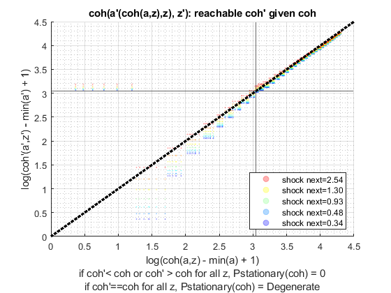 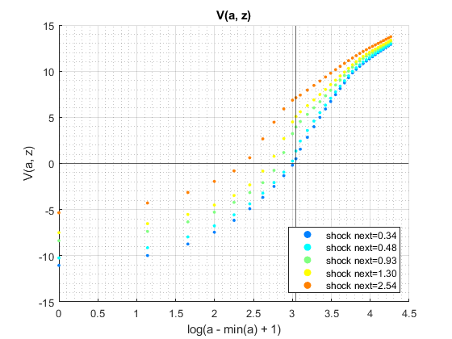
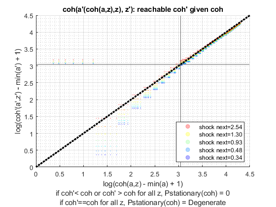 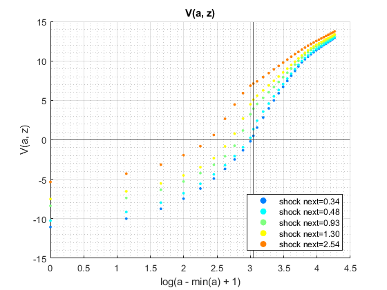 

 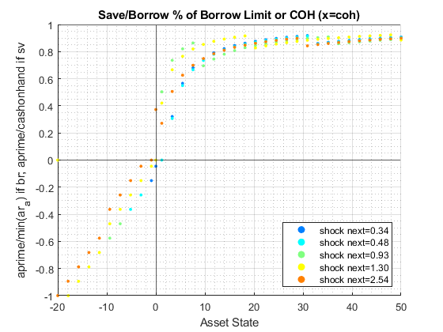
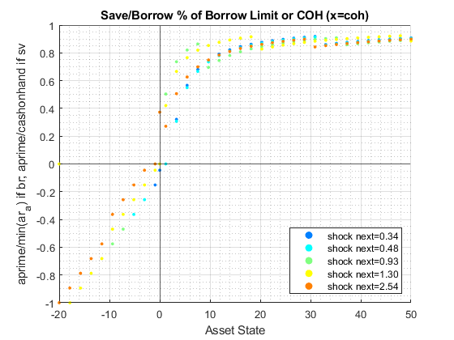  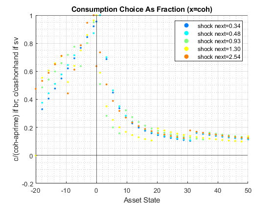 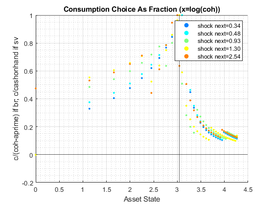
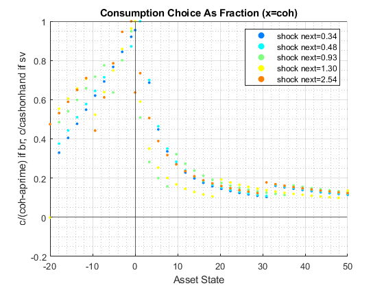 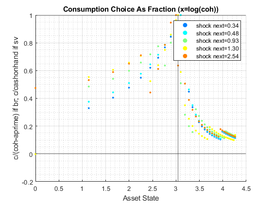  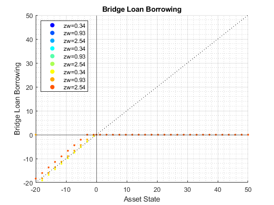
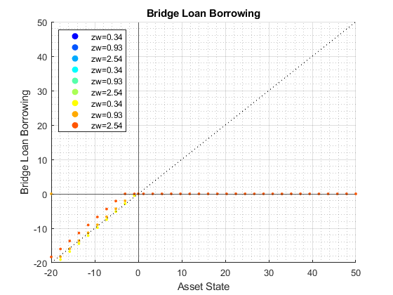  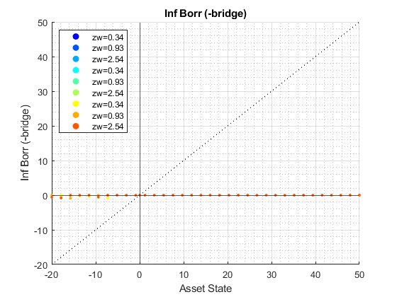
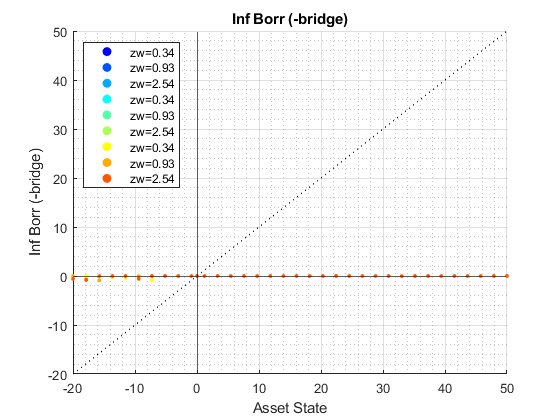 


 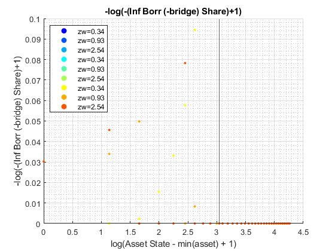
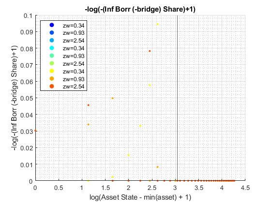 


Display Various Containers
bl_display_defparam = true;
if (bl_display_defparam)
Display 1 support_map
fft_container_map_display(support_map);
----------------------------------------
----------------------------------------
xxxxxxxxxxxxxxxxxxxxxxxxxxxxxxxxxxxxxxxx
xxxxxxxxxxxxxxxxxxxxxxxxxxxxxxxxxxxxxxxx
Begin: Show all key and value pairs from container
CONTAINER NAME: SUPPORT_MAP
----------------------------------------
Map with properties:
Count: 42
KeyType: char
ValueType: any
xxxxxxxxxxxxxxxxxxxxxxxxxxxxxxxxxxxxxxxx
xxxxxxxxxxxxxxxxxxxxxxxxxxxxxxxxxxxxxxxx
----------------------------------------
----------------------------------------
pos = 1 ; key = bl_display ; val = false
pos = 2 ; key = bl_display_dist ; val = false
pos = 3 ; key = bl_display_final ; val = true
pos = 4 ; key = bl_display_final_dist ; val = false
pos = 5 ; key = bl_display_final_dist_detail ; val = false
pos = 6 ; key = bl_display_funcgrids ; val = false
pos = 7 ; key = bl_display_infbridge ; val = false
pos = 8 ; key = bl_display_minccost ; val = false
pos = 9 ; key = bl_graph ; val = true
pos = 10 ; key = bl_graph_coh_t_coh ; val = true
pos = 11 ; key = bl_graph_discrete ; val = true
pos = 12 ; key = bl_graph_forinf_discrete ; val = true
pos = 13 ; key = bl_graph_forinf_pol_lvl ; val = true
pos = 14 ; key = bl_graph_forinf_pol_pct ; val = true
pos = 15 ; key = bl_graph_funcgrids ; val = false
pos = 16 ; key = bl_graph_onebyones ; val = true
pos = 17 ; key = bl_graph_pol_lvl ; val = true
pos = 18 ; key = bl_graph_pol_pct ; val = true
pos = 19 ; key = bl_graph_val ; val = true
pos = 20 ; key = bl_img_save ; val = false
pos = 21 ; key = bl_mat ; val = false
pos = 22 ; key = bl_post ; val = true
pos = 23 ; key = bl_profile ; val = false
pos = 24 ; key = bl_profile_dist ; val = false
pos = 25 ; key = bl_time ; val = false
pos = 26 ; key = it_display_every ; val = 5
pos = 27 ; key = it_display_final_colmax ; val = 12
pos = 28 ; key = it_display_final_rowmax ; val = 100
pos = 29 ; key = st_img_name_main ; val = ff_abz_fibs_vf_default
pos = 30 ; key = st_img_path ; val = C:/Users/fan/CodeDynaAsset//m_fibs//m_abz_solve/img/
pos = 31 ; key = st_img_prefix ; val =
pos = 32 ; key = st_img_suffix ; val = _p4.png
pos = 33 ; key = st_mat_name_main ; val = ff_abz_fibs_vf_default
pos = 34 ; key = st_mat_path ; val = C:/Users/fan/CodeDynaAsset//m_fibs//m_abz_solve/mat/
pos = 35 ; key = st_mat_prefix ; val =
pos = 36 ; key = st_mat_suffix ; val = _p4
pos = 37 ; key = st_matimg_path_root ; val = C:/Users/fan/CodeDynaAsset//m_fibs/
pos = 38 ; key = st_profile_name_main ; val = ff_abz_fibs_vf_default
pos = 39 ; key = st_profile_path ; val = C:/Users/fan/CodeDynaAsset//m_fibs//m_abz_solve/profile/
pos = 40 ; key = st_profile_prefix ; val =
pos = 41 ; key = st_profile_suffix ; val = _p4
pos = 42 ; key = st_title_prefix ; val =
----------------------------------------
xxxxxxxxxxxxxxxxxxxxxxxxxxxxxxxxxxxxxxxx
Scalars in Container and Sizes and Basic Statistics
xxxxxxxxxxxxxxxxxxxxxxxxxxxxxxxxxxxxxxxx
i idx value
__ ___ _____
bl_display 1 1 0
bl_display_dist 2 2 0
bl_display_final 3 3 1
bl_display_final_dist 4 4 0
bl_display_final_dist_detail 5 5 0
bl_display_funcgrids 6 6 0
bl_display_infbridge 7 7 0
bl_display_minccost 8 8 0
bl_graph 9 9 1
bl_graph_coh_t_coh 10 10 1
bl_graph_discrete 11 11 1
bl_graph_forinf_discrete 12 12 1
bl_graph_forinf_pol_lvl 13 13 1
bl_graph_forinf_pol_pct 14 14 1
bl_graph_funcgrids 15 15 0
bl_graph_onebyones 16 16 1
bl_graph_pol_lvl 17 17 1
bl_graph_pol_pct 18 18 1
bl_graph_val 19 19 1
bl_img_save 20 20 0
bl_mat 21 21 0
bl_post 22 22 1
bl_profile 23 23 0
bl_profile_dist 24 24 0
bl_time 25 25 0
it_display_every 26 26 5
it_display_final_colmax 27 27 12
it_display_final_rowmax 28 28 100
----------------------------------------
xxxxxxxxxxxxxxxxxxxxxxxxxxxxxxxxxxxxxxxx
Strings in Container and Sizes and Basic Statistics
xxxxxxxxxxxxxxxxxxxxxxxxxxxxxxxxxxxxxxxx
i idx
__ ___
st_img_name_main 1 29
st_img_path 2 30
st_img_prefix 3 31
st_img_suffix 4 32
st_mat_name_main 5 33
st_mat_path 6 34
st_mat_prefix 7 35
st_mat_suffix 8 36
st_matimg_path_root 9 37
st_profile_name_main 10 38
st_profile_path 11 39
st_profile_prefix 12 40
st_profile_suffix 13 41
st_title_prefix 14 42
Display 2 armt_map
fft_container_map_display(armt_map);
----------------------------------------
----------------------------------------
xxxxxxxxxxxxxxxxxxxxxxxxxxxxxxxxxxxxxxxx
xxxxxxxxxxxxxxxxxxxxxxxxxxxxxxxxxxxxxxxx
Begin: Show all key and value pairs from container
CONTAINER NAME: ARMT_MAP
----------------------------------------
Map with properties:
Count: 6
KeyType: char
ValueType: any
xxxxxxxxxxxxxxxxxxxxxxxxxxxxxxxxxxxxxxxx
xxxxxxxxxxxxxxxxxxxxxxxxxxxxxxxxxxxxxxxx
----------------------------------------
----------------------------------------
pos = 1 ; key = ar_a ;rown= 1 ,coln= 35
ar_a :mu= 14.5714 ,sd= 20.9645 ,min= -20 ,max= 50
zi_1_C1 zi_2_C2 zi_3_C3 zi_18_c18 zi_33_c33 zi_34_c34 zi_35_c35
_______ _______ _______ _________ _________ _________ _________
zi_1_r1 -20 -17.879 -15.758 13.939 45.758 47.879 50
pos = 2 ; key = ar_forbrblk ;rown= 1 ,coln= 9
ar_forbrblk :mu= -7.0556 ,sd= 6.3809 ,min= -19 ,max= 0
zi_1_c1 zi_2_c2 zi_3_c3 zi_5_c5 zi_7_c7 zi_8_c8 zi_9_c9
_______ _______ _______ _______ _______ _______ _______
zi_1_r1 -19 -14.5 -10 -5.5 -2.5 -1 0
pos = 3 ; key = ar_forbrblk_r ;rown= 1 ,coln= 9
ar_forbrblk_r :mu= 0.065 ,sd= 0 ,min= 0.065 ,max= 0.065
zi_1_c1 zi_2_c2 zi_3_c3 zi_5_c5 zi_7_c7 zi_8_c8 zi_9_c9
_______ _______ _______ _______ _______ _______ _______
zi_1_r1 0.065 0.065 0.065 0.065 0.065 0.065 0.065
pos = 4 ; key = ar_stationary ;rown= 1 ,coln= 7
ar_stationary :mu= 0.14286 ,sd= 0.13646 ,min= 0.0093649 ,max= 0.35951
zi_1_c1 zi_2_c2 zi_3_c3 zi_4_c4 zi_5_c5 zi_6_c6 zi_7_c7
_________ ________ _______ _______ _______ ________ _________
zi_1_r1 0.0093649 0.071014 0.23987 0.35951 0.23987 0.071014 0.0093649
pos = 5 ; key = ar_z ;rown= 1 ,coln= 7
ar_z :mu= 1.1563 ,sd= 0.79411 ,min= 0.34387 ,max= 2.5409
zi_1_c1 zi_2_c2 zi_3_c3 zi_4_c4 zi_5_c5 zi_6_c6 zi_7_c7
_______ _______ _______ _______ _______ _______ _______
zi_1_r1 0.34387 0.47991 0.66977 0.93474 1.3045 1.8206 2.5409
pos = 6 ; key = mt_z_trans ;rown= 7 ,coln= 7
mt_z_trans :mu= 0.14286 ,sd= 0.20394 ,min= 1.1102e-16 ,max= 0.59534
zi_1_c1 zi_2_c2 zi_3_c3 zi_4_c4 zi_5_c5 zi_6_c6 zi_7_c7
__________ __________ __________ __________ __________ __________ __________
zi_1_r1 0.43382 0.49938 0.066036 0.00077031 6.7129e-07 4.016e-11 1.1102e-16
zi_2_r2 0.066807 0.49938 0.40044 0.033144 0.00023251 1.1915e-07 4.1482e-12
zi_3_r3 0.0023033 0.11937 0.56979 0.29341 0.015067 6.319e-05 1.899e-08
zi_4_r4 1.5454e-05 0.0061942 0.19612 0.59534 0.19612 0.0061942 1.5454e-05
zi_5_r5 1.899e-08 6.319e-05 0.015067 0.29341 0.56979 0.11937 0.0023033
zi_6_r6 4.1482e-12 1.1915e-07 0.00023251 0.033144 0.40044 0.49938 0.066807
zi_7_r7 1.5851e-16 4.016e-11 6.7129e-07 0.00077031 0.066036 0.49938 0.43382
----------------------------------------
xxxxxxxxxxxxxxxxxxxxxxxxxxxxxxxxxxxxxxxx
Matrix in Container and Sizes and Basic Statistics
xxxxxxxxxxxxxxxxxxxxxxxxxxxxxxxxxxxxxxxx
i idx rowN colN mean std min max
_ ___ ____ ____ _______ _______ __________ _______
ar_a 1 1 1 35 14.571 20.964 -20 50
ar_forbrblk 2 2 1 9 -7.0556 6.3809 -19 0
ar_forbrblk_r 3 3 1 9 0.065 0 0.065 0.065
ar_stationary 4 4 1 7 0.14286 0.13646 0.0093649 0.35951
ar_z 5 5 1 7 1.1563 0.79411 0.34387 2.5409
mt_z_trans 6 6 7 7 0.14286 0.20394 1.1102e-16 0.59534
Display 3 param_map
fft_container_map_display(param_map);
----------------------------------------
----------------------------------------
xxxxxxxxxxxxxxxxxxxxxxxxxxxxxxxxxxxxxxxx
xxxxxxxxxxxxxxxxxxxxxxxxxxxxxxxxxxxxxxxx
Begin: Show all key and value pairs from container
CONTAINER NAME: PARAM_MAP
----------------------------------------
Map with properties:
Count: 37
KeyType: char
ValueType: any
xxxxxxxxxxxxxxxxxxxxxxxxxxxxxxxxxxxxxxxx
xxxxxxxxxxxxxxxxxxxxxxxxxxxxxxxxxxxxxxxx
----------------------------------------
----------------------------------------
pos = 1 ; key = bl_b_is_principle ; val = false
pos = 2 ; key = bl_bridge ; val = true
pos = 3 ; key = bl_default ; val = true
pos = 4 ; key = bl_loglin ; val = false
pos = 5 ; key = bl_rollover ; val = true
pos = 6 ; key = fl_a_max ; val = 50
pos = 7 ; key = fl_a_min ; val = 0
pos = 8 ; key = fl_b_bd ; val = -20
pos = 9 ; key = fl_beta ; val = 0.94
pos = 10 ; key = fl_c_min ; val = 0.02
pos = 11 ; key = fl_crra ; val = 1.5
pos = 12 ; key = fl_default_aprime ; val = 0
pos = 13 ; key = fl_forbrblk_brleast ; val = -1
pos = 14 ; key = fl_forbrblk_brmost ; val = -19
pos = 15 ; key = fl_forbrblk_gap ; val = -1.5
pos = 16 ; key = fl_loglin_threshold ; val = 1
pos = 17 ; key = fl_nan_replace ; val = -99999
pos = 18 ; key = fl_r_fbr ; val = 0.065
pos = 19 ; key = fl_r_fsv ; val = 0.025
pos = 20 ; key = fl_r_inf ; val = 0.095
pos = 21 ; key = fl_r_inf_bridge ; val = 0.095
pos = 22 ; key = fl_tol_dist ; val = 1e-05
pos = 23 ; key = fl_tol_pol ; val = 1e-05
pos = 24 ; key = fl_tol_val ; val = 1e-05
pos = 25 ; key = fl_w ; val = 1.28
pos = 26 ; key = fl_z_mu ; val = 0
pos = 27 ; key = fl_z_rho ; val = 0.8
pos = 28 ; key = fl_z_sig ; val = 0.2
pos = 29 ; key = it_a_n ; val = 35
pos = 30 ; key = it_maxiter_dist ; val = 1000
pos = 31 ; key = it_maxiter_val ; val = 20
pos = 32 ; key = it_tol_pol_nochange ; val = 25
pos = 33 ; key = it_trans_power_dist ; val = 1000
pos = 34 ; key = it_z_n ; val = 7
pos = 35 ; key = st_analytical_stationary_type ; val = eigenvector
pos = 36 ; key = st_forbrblk_type ; val = seg3
pos = 37 ; key = st_model ; val = abz_fibs
----------------------------------------
xxxxxxxxxxxxxxxxxxxxxxxxxxxxxxxxxxxxxxxx
Scalars in Container and Sizes and Basic Statistics
xxxxxxxxxxxxxxxxxxxxxxxxxxxxxxxxxxxxxxxx
i idx value
__ ___ ______
bl_b_is_principle 1 1 0
bl_bridge 2 2 1
bl_default 3 3 1
bl_loglin 4 4 0
bl_rollover 5 5 1
fl_a_max 6 6 50
fl_a_min 7 7 0
fl_b_bd 8 8 -20
fl_beta 9 9 0.94
fl_c_min 10 10 0.02
fl_crra 11 11 1.5
fl_default_aprime 12 12 0
fl_forbrblk_brleast 13 13 -1
fl_forbrblk_brmost 14 14 -19
fl_forbrblk_gap 15 15 -1.5
fl_loglin_threshold 16 16 1
fl_nan_replace 17 17 -99999
fl_r_fbr 18 18 0.065
fl_r_fsv 19 19 0.025
fl_r_inf 20 20 0.095
fl_r_inf_bridge 21 21 0.095
fl_tol_dist 22 22 1e-05
fl_tol_pol 23 23 1e-05
fl_tol_val 24 24 1e-05
fl_w 25 25 1.28
fl_z_mu 26 26 0
fl_z_rho 27 27 0.8
fl_z_sig 28 28 0.2
it_a_n 29 29 35
it_maxiter_dist 30 30 1000
it_maxiter_val 31 31 20
it_tol_pol_nochange 32 32 25
it_trans_power_dist 33 33 1000
it_z_n 34 34 7
----------------------------------------
xxxxxxxxxxxxxxxxxxxxxxxxxxxxxxxxxxxxxxxx
Strings in Container and Sizes and Basic Statistics
xxxxxxxxxxxxxxxxxxxxxxxxxxxxxxxxxxxxxxxx
i idx
_ ___
st_analytical_stationary_type 1 35
st_forbrblk_type 2 36
st_model 3 37
Display 4 func_map
fft_container_map_display(func_map);
----------------------------------------
----------------------------------------
xxxxxxxxxxxxxxxxxxxxxxxxxxxxxxxxxxxxxxxx
xxxxxxxxxxxxxxxxxxxxxxxxxxxxxxxxxxxxxxxx
Begin: Show all key and value pairs from container
CONTAINER NAME: FUNC_MAP
----------------------------------------
Map with properties:
Count: 8
KeyType: char
ValueType: any
xxxxxxxxxxxxxxxxxxxxxxxxxxxxxxxxxxxxxxxx
xxxxxxxxxxxxxxxxxxxxxxxxxxxxxxxxxxxxxxxx
----------------------------------------
----------------------------------------
pos = 1 ; key = f_bprime ; val = @(fl_r_inf,ar_for_borr,ar_inf_borr,ar_for_save)(ar_for_borr./(1+fl_r_fbr)+ar_inf_borr./(1+fl_r_inf)+ar_for_save./(1+fl_r_fsv))
pos = 2 ; key = f_coh ; val = @(ar_z,ar_b)(ar_z*fl_w+ar_b)
pos = 3 ; key = f_cons_coh_fbis ; val = @(coh,ar_bprime_in_c)(coh+ar_bprime_in_c)
pos = 4 ; key = f_cons_coh_save ; val = @(coh,ar_for_save)(coh-ar_for_save./(1+fl_r_fsv))
pos = 5 ; key = f_inc ; val = @(ar_z,fl_r_inf,ar_for_borr,ar_inf_borr,ar_for_save)(ar_z*fl_w+((ar_for_borr./(1+fl_r_fbr))*fl_r_fbr+(ar_inf_borr./(1+fl_r_inf))*fl_r_inf+(ar_for_save./(1+fl_r_fsv))*fl_r_fsv))
pos = 6 ; key = f_util_crra ; val = @(c)(((c).^(1-fl_crra)-1)./(1-fl_crra))
pos = 7 ; key = f_util_log ; val = @(c)log(c)
pos = 8 ; key = f_util_standin ; val = @(z,b)f_util_log(f_coh_simple(z,b).*(f_coh_simple(z,b)>0)+fl_c_min.*(f_coh_simple(z,b)<=0))
----------------------------------------
xxxxxxxxxxxxxxxxxxxxxxxxxxxxxxxxxxxxxxxx
Scalars in Container and Sizes and Basic Statistics
xxxxxxxxxxxxxxxxxxxxxxxxxxxxxxxxxxxxxxxx
i idx xFunction
_ ___ _________
f_bprime 1 1 1
f_coh 2 2 2
f_cons_coh_fbis 3 3 3
f_cons_coh_save 4 4 4
f_inc 5 5 5
f_util_crra 6 6 6
f_util_log 7 7 7
f_util_standin 8 8 8
Display 5 result_map
fft_container_map_display(result_map);
----------------------------------------
----------------------------------------
xxxxxxxxxxxxxxxxxxxxxxxxxxxxxxxxxxxxxxxx
xxxxxxxxxxxxxxxxxxxxxxxxxxxxxxxxxxxxxxxx
Begin: Show all key and value pairs from container
CONTAINER NAME: RESULT_MAP
----------------------------------------
Map with properties:
Count: 21
KeyType: char
ValueType: any
xxxxxxxxxxxxxxxxxxxxxxxxxxxxxxxxxxxxxxxx
xxxxxxxxxxxxxxxxxxxxxxxxxxxxxxxxxxxxxxxx
----------------------------------------
----------------------------------------
pos = 1 ; key = ar_pol_diff_norm ;rown= 20 ,coln= 1
ar_pol_diff_norm :mu= 47.1596 ,sd= 92.8277 ,min= 2.9998 ,max= 324.2902
zi_1_c1
_______
zi_1_R1 293.38
zi_2_R2 324.29
zi_3_R3 106.04
zi_4_R4 53.871
zi_5_R5 33.097
zi_16_r16 5.0958
zi_17_r17 3.674
zi_18_r18 3.674
zi_19_r19 2.9998
zi_20_r20 2.9998
pos = 2 ; key = ar_st_pol_names ; val = cl_mt_pol_a cl_mt_coh cl_mt_pol_c cl_mt_pol_b_bridge cl_mt_pol_inf_borr_nobridge cl_mt_pol_for_borr cl_mt_pol_for_save
pos = 3 ; key = ar_val_diff_norm ;rown= 20 ,coln= 1
ar_val_diff_norm :mu= 9.8652 ,sd= 9.7427 ,min= 1.7333 ,max= 35.1911
zi_1_c1
_______
zi_1_R1 35.191
zi_2_R2 27.601
zi_3_R3 22.977
zi_4_R4 19.813
zi_5_R5 16.321
zi_16_r16 2.5574
zi_17_r17 2.2837
zi_18_r18 2.0703
zi_19_r19 1.8945
zi_20_r20 1.7333
pos = 4 ; key = cl_mt_coh ;rown= 35 ,coln= 7
cl_mt_coh :mu= 16.0515 ,sd= 20.7266 ,min= -19.5598 ,max= 53.2523
zi_1_c1 zi_2_c2 zi_3_c3 zi_4_c4 zi_5_c5 zi_6_c6 zi_7_c7
_______ _______ _______ _______ _______ _______ _______
zi_1_R1 -19.56 -19.386 -19.143 -18.804 -18.33 -17.67 -16.748
zi_2_R2 -17.439 -17.265 -17.021 -16.682 -16.209 -15.548 -14.626
zi_3_R3 -15.317 -15.143 -14.9 -14.561 -14.088 -13.427 -12.505
zi_4_R4 -13.196 -13.022 -12.779 -12.44 -11.967 -11.306 -10.384
zi_5_R5 -11.075 -10.901 -10.658 -10.319 -9.8454 -9.1848 -8.2628
zi_31_r31 41.955 42.129 42.372 42.712 43.185 43.846 44.767
zi_32_r32 44.077 44.251 44.494 44.833 45.306 45.967 46.889
zi_33_r33 46.198 46.372 46.615 46.954 47.427 48.088 49.01
zi_34_r34 48.319 48.493 48.736 49.075 49.549 50.209 51.131
zi_35_r35 50.44 50.614 50.857 51.196 51.67 52.33 53.252
pos = 5 ; key = cl_mt_pol_a ;rown= 35 ,coln= 7
cl_mt_pol_a :mu= 13.384 ,sd= 19.2751 ,min= -20 ,max= 47.8788
zi_1_c1 zi_2_c2 zi_3_c3 zi_4_c4 zi_5_c5 zi_6_c6 zi_7_c7
_______ _______ _______ _______ _______ _______ _______
zi_1_R1 0 0 0 0 0 0 -20
zi_2_R2 -20 -20 -20 -20 -20 -20 -17.879
zi_3_R3 -17.879 -17.879 -17.879 -17.879 -17.879 -15.758 -15.758
zi_4_R4 -15.758 -15.758 -15.758 -15.758 -15.758 -13.636 -13.636
zi_5_R5 -13.636 -13.636 -13.636 -13.636 -13.636 -11.515 -11.515
zi_31_r31 37.273 37.273 37.273 37.273 39.394 39.394 39.394
zi_32_r32 39.394 39.394 39.394 39.394 41.515 41.515 41.515
zi_33_r33 41.515 41.515 41.515 41.515 43.636 43.636 43.636
zi_34_r34 43.636 43.636 43.636 43.636 45.758 45.758 45.758
zi_35_r35 45.758 45.758 45.758 45.758 45.758 47.879 47.879
pos = 6 ; key = cl_mt_pol_b_bridge ;rown= 35 ,coln= 7
cl_mt_pol_b_bridge :mu= -2.3257 ,sd= 4.9856 ,min= -19.0953 ,max= 0
zi_1_c1 zi_2_c2 zi_3_c3 zi_4_c4 zi_5_c5 zi_6_c6 zi_7_c7
_______ _______ _______ _______ _______ _______ _______
zi_1_R1 0 0 0 0 0 0 -18.339
zi_2_R2 -19.095 -18.905 -18.639 -18.267 -17.749 -17.025 -16.016
zi_3_R3 -16.773 -16.582 -16.316 -15.944 -15.426 -14.703 -13.693
zi_4_R4 -14.45 -14.259 -13.993 -13.622 -13.103 -12.38 -11.371
zi_5_R5 -12.127 -11.936 -11.67 -11.299 -10.781 -10.057 -9.0478
zi_31_r31 0 0 0 0 0 0 0
zi_32_r32 0 0 0 0 0 0 0
zi_33_r33 0 0 0 0 0 0 0
zi_34_r34 0 0 0 0 0 0 0
zi_35_r35 0 0 0 0 0 0 0
pos = 7 ; key = cl_mt_pol_c ;rown= 35 ,coln= 7
cl_mt_pol_c :mu= 3.2911 ,sd= 1.7598 ,min= 0.02 ,max= 7.0283
zi_1_c1 zi_2_c2 zi_3_c3 zi_4_c4 zi_5_c5 zi_6_c6 zi_7_c7
_______ _______ _______ _______ _______ _______ _______
zi_1_R1 0.02 0.02 0.02 0.02 0.02 0.02 1.5446
zi_2_R2 0.84361 1.0277 1.2708 1.6099 2.0987 2.7849 1.7286
zi_3_R3 1.0376 1.2118 1.4548 1.7939 2.2953 0.99006 1.9164
zi_4_R4 1.2217 1.3958 1.6388 1.9862 2.4919 1.1747 2.113
zi_5_R5 1.4057 1.5798 1.8228 2.1828 2.6764 1.3588 2.3096
zi_31_r31 5.5917 5.7658 6.0088 6.348 4.7518 5.4124 6.3344
zi_32_r32 5.6434 5.8175 6.0606 6.3997 4.8036 5.4642 6.3861
zi_33_r33 5.6951 5.8693 6.1123 6.4515 4.8553 5.5159 6.4378
zi_34_r34 5.7469 5.921 6.164 6.5032 4.907 5.5676 6.4896
zi_35_r35 5.7986 5.9727 6.2158 6.5549 7.0283 5.6194 6.5413
pos = 8 ; key = cl_mt_pol_for_borr ;rown= 35 ,coln= 7
cl_mt_pol_for_borr :mu= -0.42165 ,sd= 0.83111 ,min= -2.6625 ,max= 0
zi_1_c1 zi_2_c2 zi_3_c3 zi_4_c4 zi_5_c5 zi_6_c6 zi_7_c7
_______ _______ _______ _______ _______ _______ _______
zi_1_R1 0 0 0 0 0 0 -1.065
zi_2_R2 -1.065 -1.065 -1.065 -1.065 -2.6625 -2.6625 -1.065
zi_3_R3 -1.065 -1.065 -1.065 -1.065 -2.6625 -1.065 -2.6625
zi_4_R4 -1.065 -1.065 -1.065 -2.6625 -2.6625 -1.065 -2.6625
zi_5_R5 -1.065 -1.065 -1.065 -2.6625 -2.6625 -1.065 -2.6625
zi_31_r31 0 0 0 0 0 0 0
zi_32_r32 0 0 0 0 0 0 0
zi_33_r33 0 0 0 0 0 0 0
zi_34_r34 0 0 0 0 0 0 0
zi_35_r35 0 0 0 0 0 0 0
pos = 9 ; key = cl_mt_pol_for_save ;rown= 35 ,coln= 7
cl_mt_pol_for_save :mu= 16.1899 ,sd= 15.7711 ,min= 0 ,max= 47.8788
zi_1_c1 zi_2_c2 zi_3_c3 zi_4_c4 zi_5_c5 zi_6_c6 zi_7_c7
_______ _______ _______ _______ _________ _______ _______
zi_1_R1 0 0 0 0 0 0 0
zi_2_R2 0.1603 0 0 0 0.41134 0 0
zi_3_R3 0 0 0 0 0.20983 0.01019 0.59817
zi_4_R4 0 0 0 0.52661 0.0083121 0 0.39666
zi_5_R5 0 0 0 0.3251 0 0 0.19514
zi_31_r31 37.273 37.273 37.273 37.273 39.394 39.394 39.394
zi_32_r32 39.394 39.394 39.394 39.394 41.515 41.515 41.515
zi_33_r33 41.515 41.515 41.515 41.515 43.636 43.636 43.636
zi_34_r34 43.636 43.636 43.636 43.636 45.758 45.758 45.758
zi_35_r35 45.758 45.758 45.758 45.758 45.758 47.879 47.879
pos = 10 ; key = cl_mt_pol_inf_borr_nobridge ;rown= 35 ,coln= 7
cl_mt_pol_inf_borr_nobridge :mu= -0.058521 ,sd= 0.18119 ,min= -0.90102 ,max= 0
zi_1_c1 zi_2_c2 zi_3_c3 zi_4_c4 zi_5_c5 zi_6_c6 zi_7_c7
_________ _________ ________ ________ _______ ________ ________
zi_1_R1 0 0 0 0 0 0 -0.5963
zi_2_R2 0 -0.030369 -0.29647 -0.66785 0 -0.31201 -0.79781
zi_3_R3 -0.041211 -0.23188 -0.49799 -0.86937 0 0 0
zi_4_R4 -0.24273 -0.4334 -0.69951 0 0 -0.19133 0
zi_5_R5 -0.44424 -0.63491 -0.90102 0 -0.1932 -0.39284 0
zi_31_r31 0 0 0 0 0 0 0
zi_32_r32 0 0 0 0 0 0 0
zi_33_r33 0 0 0 0 0 0 0
zi_34_r34 0 0 0 0 0 0 0
zi_35_r35 0 0 0 0 0 0 0
pos = 11 ; key = mt_it_b_bridge_idx ;rown= 35 ,coln= 7
mt_it_b_bridge_idx :mu= 0.24082 ,sd= 0.42845 ,min= 0 ,max= 1
zi_1_c1 zi_2_c2 zi_3_c3 zi_4_c4 zi_5_c5 zi_6_c6 zi_7_c7
_______ _______ _______ _______ _______ _______ _______
zi_1_R1 false false false false false false true
zi_2_R2 true true true true true true true
zi_3_R3 true true true true true true true
zi_4_R4 true true true true true true true
zi_5_R5 true true true true true true true
zi_31_r31 false false false false false false false
zi_32_r32 false false false false false false false
zi_33_r33 false false false false false false false
zi_34_r34 false false false false false false false
zi_35_r35 false false false false false false false
pos = 12 ; key = mt_it_for_only_nbdg ;rown= 35 ,coln= 7
mt_it_for_only_nbdg :mu= 0 ,sd= 0 ,min= 0 ,max= 0
zi_1_c1 zi_2_c2 zi_3_c3 zi_4_c4 zi_5_c5 zi_6_c6 zi_7_c7
_______ _______ _______ _______ _______ _______ _______
zi_1_R1 false false false false false false false
zi_2_R2 false false false false false false false
zi_3_R3 false false false false false false false
zi_4_R4 false false false false false false false
zi_5_R5 false false false false false false false
zi_31_r31 false false false false false false false
zi_32_r32 false false false false false false false
zi_33_r33 false false false false false false false
zi_34_r34 false false false false false false false
zi_35_r35 false false false false false false false
pos = 13 ; key = mt_it_fr_brrsv_nbdg ;rown= 35 ,coln= 7
mt_it_fr_brrsv_nbdg :mu= 0.13061 ,sd= 0.33767 ,min= 0 ,max= 1
zi_1_c1 zi_2_c2 zi_3_c3 zi_4_c4 zi_5_c5 zi_6_c6 zi_7_c7
_______ _______ _______ _______ _______ _______ _______
zi_1_R1 false false false false false false false
zi_2_R2 true false false false true false false
zi_3_R3 false false false false true true true
zi_4_R4 false false false true true false true
zi_5_R5 false false false true false false true
zi_31_r31 false false false false false false false
zi_32_r32 false false false false false false false
zi_33_r33 false false false false false false false
zi_34_r34 false false false false false false false
zi_35_r35 false false false false false false false
pos = 14 ; key = mt_it_frin_brr_nbdg ;rown= 35 ,coln= 7
mt_it_frin_brr_nbdg :mu= 0.11837 ,sd= 0.3237 ,min= 0 ,max= 1
zi_1_c1 zi_2_c2 zi_3_c3 zi_4_c4 zi_5_c5 zi_6_c6 zi_7_c7
_______ _______ _______ _______ _______ _______ _______
zi_1_R1 false false false false false false true
zi_2_R2 false true true true false true true
zi_3_R3 true true true true false false false
zi_4_R4 true true true false false true false
zi_5_R5 true true true false true true false
zi_31_r31 false false false false false false false
zi_32_r32 false false false false false false false
zi_33_r33 false false false false false false false
zi_34_r34 false false false false false false false
zi_35_r35 false false false false false false false
pos = 15 ; key = mt_it_frmsavng_only ;rown= 35 ,coln= 7
mt_it_frmsavng_only :mu= 0.67755 ,sd= 0.46837 ,min= 0 ,max= 1
zi_1_c1 zi_2_c2 zi_3_c3 zi_4_c4 zi_5_c5 zi_6_c6 zi_7_c7
_______ _______ _______ _______ _______ _______ _______
zi_1_R1 false false false false false false false
zi_2_R2 false false false false false false false
zi_3_R3 false false false false false false false
zi_4_R4 false false false false false false false
zi_5_R5 false false false false false false false
zi_31_r31 true true true true true true true
zi_32_r32 true true true true true true true
zi_33_r33 true true true true true true true
zi_34_r34 true true true true true true true
zi_35_r35 true true true true true true true
pos = 16 ; key = mt_it_inf_only_nbdg ;rown= 35 ,coln= 7
mt_it_inf_only_nbdg :mu= 0.0081633 ,sd= 0.090165 ,min= 0 ,max= 1
zi_1_c1 zi_2_c2 zi_3_c3 zi_4_c4 zi_5_c5 zi_6_c6 zi_7_c7
_______ _______ _______ _______ _______ _______ _______
zi_1_R1 false false false false false false false
zi_2_R2 false false false false false false false
zi_3_R3 false false false false false false false
zi_4_R4 false false false false false false false
zi_5_R5 false false false false false false false
zi_31_r31 false false false false false false false
zi_32_r32 false false false false false false false
zi_33_r33 false false false false false false false
zi_34_r34 false false false false false false false
zi_35_r35 false false false false false false false
pos = 17 ; key = mt_pol_perc_change ;rown= 20 ,coln= 7
mt_pol_perc_change :mu= 0.34388 ,sd= 0.34377 ,min= 0 ,max= 1
zi_1_c1 zi_2_c2 zi_3_c3 zi_4_c4 zi_5_c5 zi_6_c6 zi_7_c7
________ ________ ________ ________ ________ ________ ________
zi_1_R1 1 1 1 1 1 1 1
zi_2_R2 0.97143 0.97143 0.97143 0.97143 0.97143 0.97143 0.97143
zi_3_R3 0.91429 0.91429 0.91429 0.91429 0.91429 0.91429 0.91429
zi_4_R4 0.82857 0.82857 0.8 0.8 0.85714 0.85714 0.85714
zi_5_R5 0.68571 0.68571 0.62857 0.71429 0.68571 0.71429 0.74286
zi_16_r16 0.057143 0.028571 0.028571 0.057143 0.057143 0.057143 0.085714
zi_17_r17 0.028571 0.028571 0.028571 0 0.057143 0.028571 0.028571
zi_18_r18 0.028571 0.028571 0.028571 0.028571 0.057143 0.057143 0.028571
zi_19_r19 0.028571 0.028571 0.057143 0.028571 0.057143 0.028571 0
zi_20_r20 0.028571 0.028571 0.028571 0.057143 0.057143 0.028571 0.028571
pos = 18 ; key = mt_val ;rown= 35 ,coln= 7
mt_val :mu= 6.2523 ,sd= 6.7613 ,min= -11.0436 ,max= 13.7247
zi_1_c1 zi_2_c2 zi_3_c3 zi_4_c4 zi_5_c5 zi_6_c6 zi_7_c7
_______ _______ _______ _______ _______ _______ ________
zi_1_R1 -11.044 -10.241 -9.2889 -8.3621 -7.5016 -6.7048 -5.3397
zi_2_R2 -9.977 -9.1339 -8.2393 -7.3605 -6.519 -5.6938 -4.2847
zi_3_R3 -8.736 -7.9628 -7.1441 -6.33 -5.5253 -4.5465 -3.1422
zi_4_R4 -7.4521 -6.7644 -6.0286 -5.2803 -4.5088 -3.3123 -1.9426
zi_5_R5 -6.1692 -5.5648 -4.9081 -4.22 -3.4736 -2.1366 -0.80055
zi_31_r31 12.19 12.291 12.412 12.555 12.731 12.939 13.16
zi_32_r32 12.38 12.476 12.591 12.726 12.892 13.093 13.307
zi_33_r33 12.563 12.654 12.763 12.892 13.048 13.242 13.45
zi_34_r34 12.74 12.826 12.931 13.053 13.2 13.386 13.589
zi_35_r35 12.911 12.993 13.093 13.21 13.348 13.528 13.725
pos = 19 ; key = tb_pol_a ;rown= 35 ,coln= 7
tb_pol_a :mu= 13.384 ,sd= 19.2751 ,min= -20 ,max= 47.8788
zi_1_c1 zi_2_c2 zi_3_c3 zi_4_c4 zi_5_c5 zi_6_c6 zi_7_c7
_______ _______ _______ _______ _______ _______ _______
zi_1_R1 0 0 0 0 0 0 -20
zi_2_R2 -20 -20 -20 -20 -20 -20 -17.879
zi_3_R3 -17.879 -17.879 -17.879 -17.879 -17.879 -15.758 -15.758
zi_4_R4 -15.758 -15.758 -15.758 -15.758 -15.758 -13.636 -13.636
zi_5_R5 -13.636 -13.636 -13.636 -13.636 -13.636 -11.515 -11.515
zi_31_r31 37.273 37.273 37.273 37.273 39.394 39.394 39.394
zi_32_r32 39.394 39.394 39.394 39.394 41.515 41.515 41.515
zi_33_r33 41.515 41.515 41.515 41.515 43.636 43.636 43.636
zi_34_r34 43.636 43.636 43.636 43.636 45.758 45.758 45.758
zi_35_r35 45.758 45.758 45.758 45.758 45.758 47.879 47.879
pos = 20 ; key = tb_val ;rown= 35 ,coln= 7
tb_val :mu= 6.2523 ,sd= 6.7613 ,min= -11.0436 ,max= 13.7247
zi_1_c1 zi_2_c2 zi_3_c3 zi_4_c4 zi_5_c5 zi_6_c6 zi_7_c7
_______ _______ _______ _______ _______ _______ ________
zi_1_R1 -11.044 -10.241 -9.2889 -8.3621 -7.5016 -6.7048 -5.3397
zi_2_R2 -9.977 -9.1339 -8.2393 -7.3605 -6.519 -5.6938 -4.2847
zi_3_R3 -8.736 -7.9628 -7.1441 -6.33 -5.5253 -4.5465 -3.1422
zi_4_R4 -7.4521 -6.7644 -6.0286 -5.2803 -4.5088 -3.3123 -1.9426
zi_5_R5 -6.1692 -5.5648 -4.9081 -4.22 -3.4736 -2.1366 -0.80055
zi_31_r31 12.19 12.291 12.412 12.555 12.731 12.939 13.16
zi_32_r32 12.38 12.476 12.591 12.726 12.892 13.093 13.307
zi_33_r33 12.563 12.654 12.763 12.892 13.048 13.242 13.45
zi_34_r34 12.74 12.826 12.931 13.053 13.2 13.386 13.589
zi_35_r35 12.911 12.993 13.093 13.21 13.348 13.528 13.725
pos = 21 ; key = tb_valpol_alliter ;rown= 20 ,coln= 9
tb_valpol_alliter :mu= 6.6035 ,sd= 33.7702 ,min= 0 ,max= 324.2902
zi_1_c1 zi_2_c2 zi_3_c3 zi_5_c5 zi_7_c7 zi_8_c8 zi_9_c9
_______ _______ ________ ________ ________ ________ ________
zi_1_R1 35.191 293.38 1 1 1 1 1
zi_2_R2 27.601 324.29 0.97143 0.97143 0.97143 0.97143 0.97143
zi_3_R3 22.977 106.04 0.91429 0.91429 0.91429 0.91429 0.91429
zi_4_R4 19.813 53.871 0.82857 0.8 0.85714 0.85714 0.85714
zi_5_R5 16.321 33.097 0.68571 0.62857 0.68571 0.71429 0.74286
zi_16_r16 2.5574 5.0958 0.057143 0.028571 0.057143 0.057143 0.085714
zi_17_r17 2.2837 3.674 0.028571 0.028571 0.057143 0.028571 0.028571
zi_18_r18 2.0703 3.674 0.028571 0.028571 0.057143 0.057143 0.028571
zi_19_r19 1.8945 2.9998 0.028571 0.057143 0.057143 0.028571 0
zi_20_r20 1.7333 2.9998 0.028571 0.028571 0.057143 0.028571 0.028571
----------------------------------------
xxxxxxxxxxxxxxxxxxxxxxxxxxxxxxxxxxxxxxxx
Matrix in Container and Sizes and Basic Statistics
xxxxxxxxxxxxxxxxxxxxxxxxxxxxxxxxxxxxxxxx
i idx rowN colN mean std min max
__ ___ ____ ____ _________ ________ ________ ______
ar_pol_diff_norm 1 1 20 1 47.16 92.828 2.9998 324.29
ar_val_diff_norm 2 3 20 1 9.8652 9.7427 1.7333 35.191
cl_mt_coh 3 4 35 7 16.052 20.727 -19.56 53.252
cl_mt_pol_a 4 5 35 7 13.384 19.275 -20 47.879
cl_mt_pol_b_bridge 5 6 35 7 -2.3257 4.9856 -19.095 0
cl_mt_pol_c 6 7 35 7 3.2911 1.7598 0.02 7.0283
cl_mt_pol_for_borr 7 8 35 7 -0.42165 0.83111 -2.6625 0
cl_mt_pol_for_save 8 9 35 7 16.19 15.771 0 47.879
cl_mt_pol_inf_borr_nobridge 9 10 35 7 -0.058521 0.18119 -0.90102 0
mt_it_b_bridge_idx 10 11 35 7 0.24082 0.42845 0 1
mt_it_for_only_nbdg 11 12 35 7 0 0 0 0
mt_it_fr_brrsv_nbdg 12 13 35 7 0.13061 0.33767 0 1
mt_it_frin_brr_nbdg 13 14 35 7 0.11837 0.3237 0 1
mt_it_frmsavng_only 14 15 35 7 0.67755 0.46837 0 1
mt_it_inf_only_nbdg 15 16 35 7 0.0081633 0.090165 0 1
mt_pol_perc_change 16 17 20 7 0.34388 0.34377 0 1
mt_val 17 18 35 7 6.2523 6.7613 -11.044 13.725
tb_pol_a 18 19 35 7 13.384 19.275 -20 47.879
tb_val 19 20 35 7 6.2523 6.7613 -11.044 13.725
tb_valpol_alliter 20 21 20 9 6.6035 33.77 0 324.29
----------------------------------------
xxxxxxxxxxxxxxxxxxxxxxxxxxxxxxxxxxxxxxxx
Strings in Container and Sizes and Basic Statistics
xxxxxxxxxxxxxxxxxxxxxxxxxxxxxxxxxxxxxxxx
i idx
_ ___
ar_st_pol_names 1 2
end
end